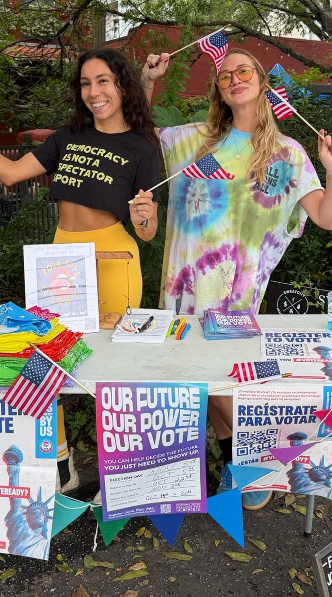
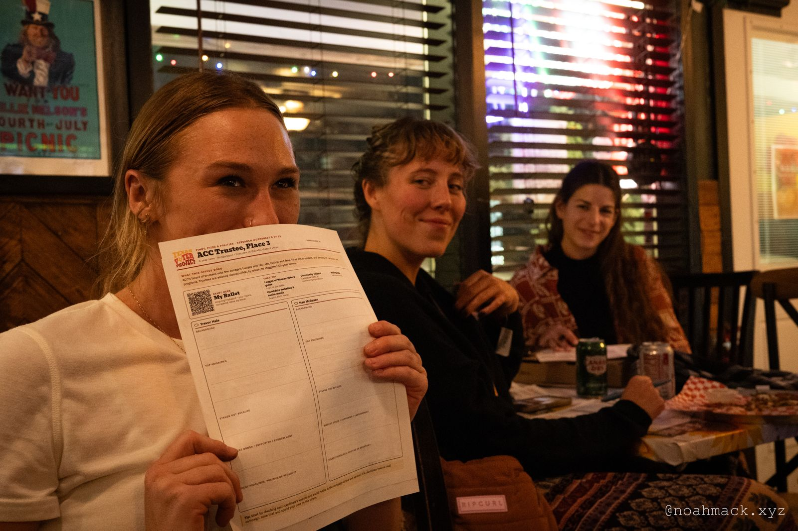
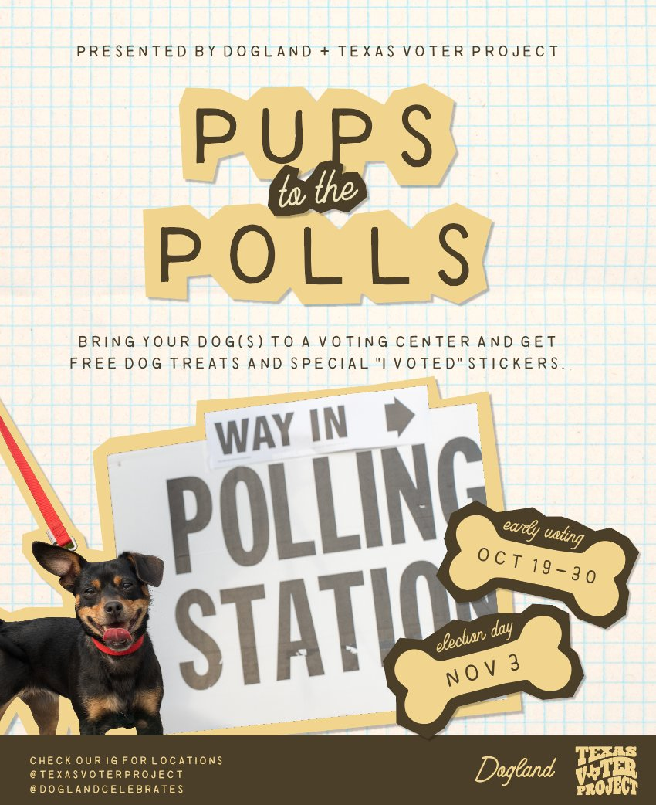
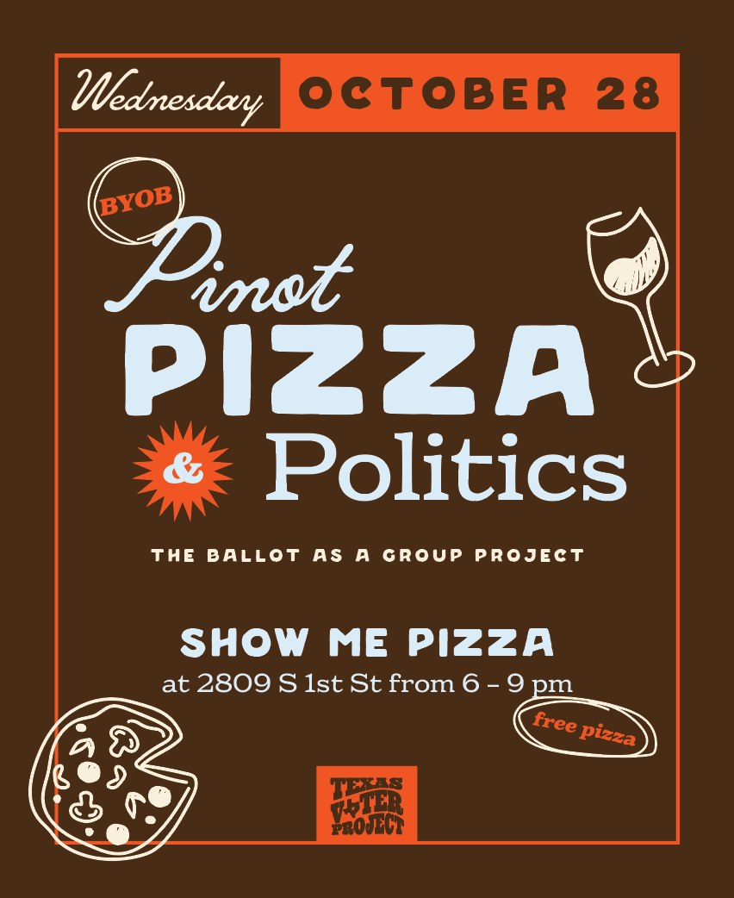
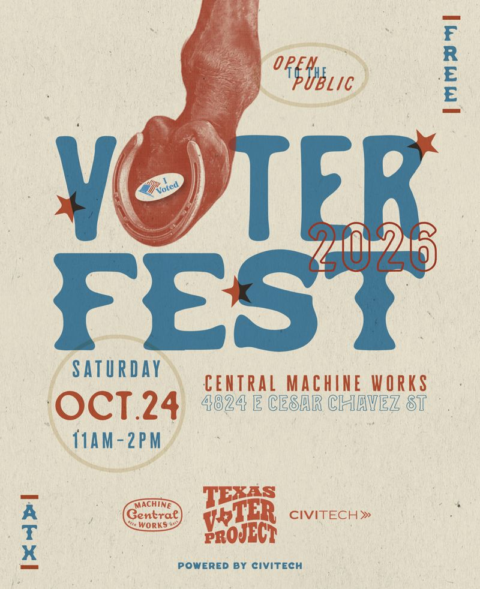
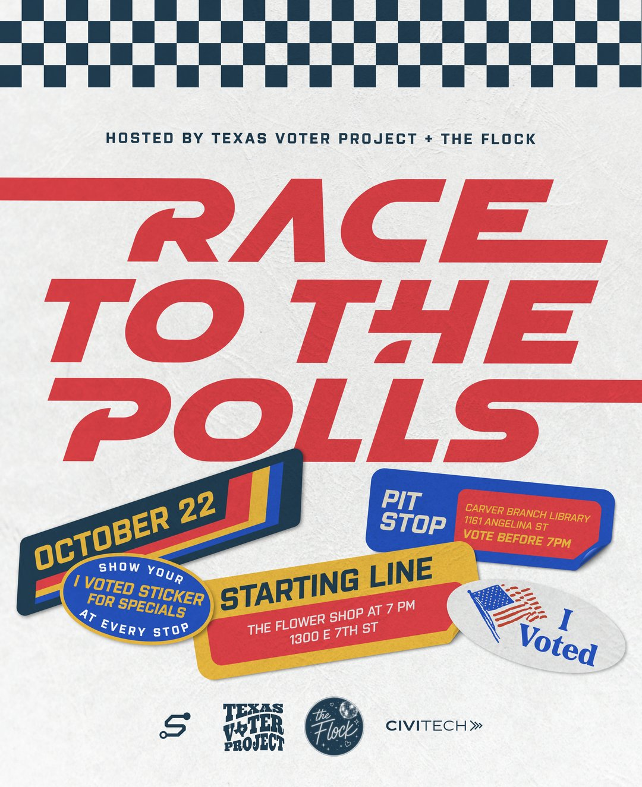
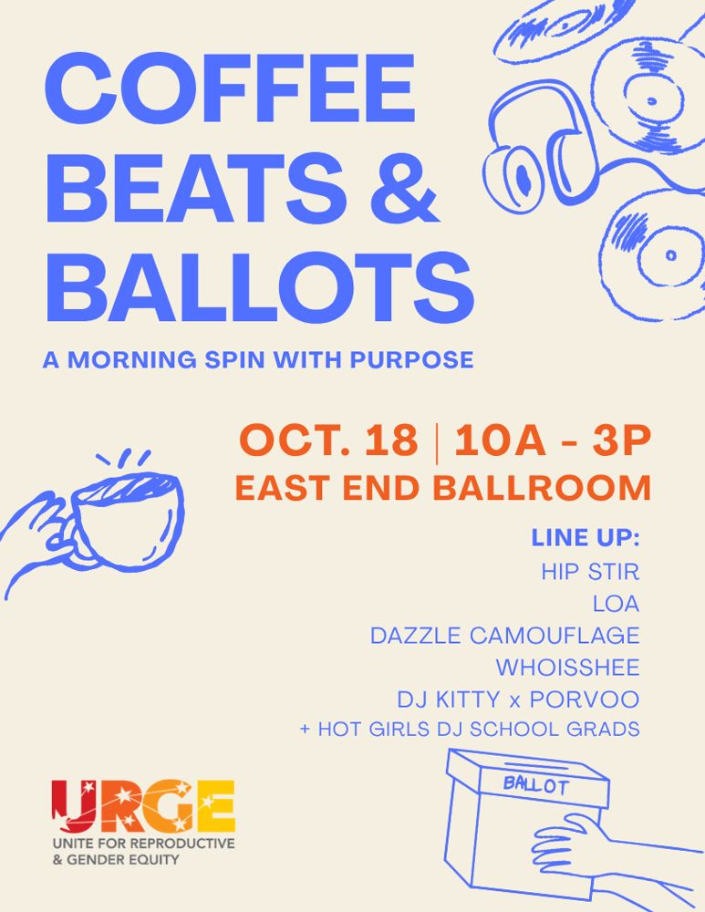
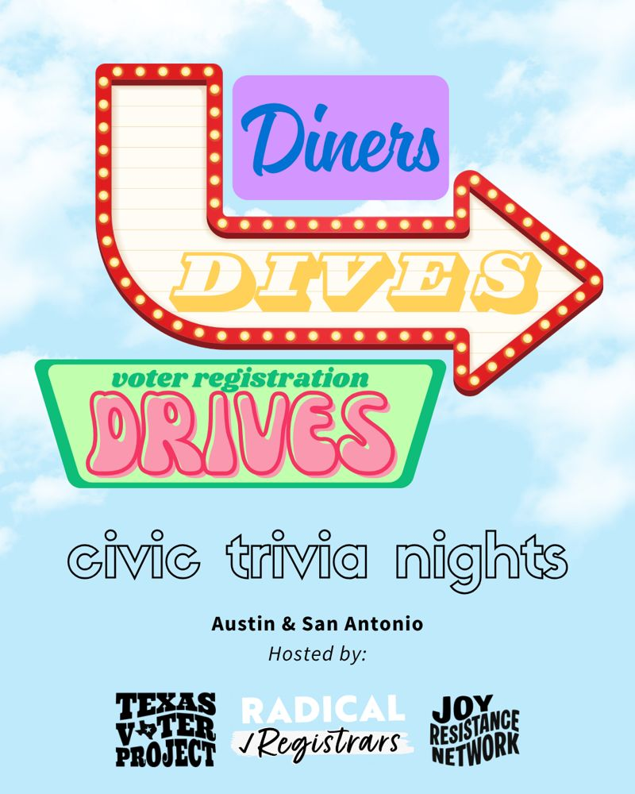

20–30 pts
How much less adults under 25 know about which level of government does what
That knowledge gap explains about half of the youth turnout gap.
Stockemer & Rocher, 2016We bring civic life to the bars, run clubs and patios where young Texans already spend their time. Over a drink or a board game, people learn how local power works, meet their neighbors and find reasons to keep showing up.
We raise civic participation among Texans 18 to 35 by building political knowledge and social connection at the same time.
A Texas where young people know how local power works, have people to show up with, and use both, in every election and the months between.

It isn't a straight line. The first loop repeats every election. The second is for anyone ready to go deeper. Keep scrolling to follow the runner.
AttendCome to a low-key TVP event. There's no wrong place to start.
Four findings behind how we work, and why knowledge and community have to be built together.
20–30 pts
That knowledge gap explains about half of the youth turnout gap.
Stockemer & Rocher, 201669.6%
425 respondents, ages 18 to 35, in a city where turnout ran under 10%.
TVP and UTSA survey, 2025Clarity
The people who knew the least going in gained the most.
Roadmaps to Representation, San Francisco, 2018Trust
Information explains how to vote. Community is why people keep coming back.
Antionette Priscilla Carroll, Grinnell CollegeWe don't drop off information and leave. We sit at the table with people until local politics feels like theirs. That's how knowledge turns into power.
Sources: Stockemer & Rocher, Age, political knowledge and electoral turnout (2016); Texas Voter Project and UTSA, San Antonio voter survey (May 2025); Roadmaps to Representation (2018); Grinnell College, 2026 Social Innovator in Residence profile. See all our research

Before San Antonio's May 2025 city election, we gave young voters a nonpartisan guide to the races on their ballot. Afterward, we asked what it was like to use. One answer:
“I was feeling very overwhelmed by the large number of mayoral candidates but this was informative, easy to digest, and helped me to narrow down my choices.”
Every event was free, and nobody needed experience or a plus-one.
No upcoming events yet. New ones are on the way.
Get invites to what's next
Pop-ups at polling places with Dogland: dog treats, bandanas and a selfie stop.

Free pizza, BYOB and the ballot as a group project. Everyone researched a race and presented it.

A free block party at Central Machine Works on the only Saturday of early voting, with live music, line dancing, vendors and nonpartisan voter info.

A bar crawl to early voting with The Flock. Your I Voted sticker got you specials at every stop.

A morning dance party with URGE: DJs, coffee and a plan to vote.

Civic trivia nights in Austin and San Antonio, with voter registration at the door.
A board game night where City Council District 5 candidates and young voters met as equals. No campaigning allowed.
Election grants end on Election Day. The relationships don't. The time between elections is when trust gets built, and it's the hardest work to fund.
Get on the guest list for event invites and whatever we're planning next. We only email when there's something worth showing up for.
Prefer texts? Sign up for text invites